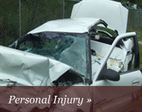

LEGAL AREAS
Personal Injury
Locus Law Firm effectively works to level the playing field against insurance companies by putting our experience and proven techniques to work. You are entitled to compensation for personal injuries resulting from the negligent acts on another. Recoverable damages may include reimbursement for property damage, medical expenses, lost wages, physical pain, mental suffering, physical limitations and disfigurement
Goverment Contract
Locus Law Firm effectively works to level the playing field against insurance companies by putting our experience and proven techniques to work. You are entitled to compensation for personal injuries resulting from the negligent acts on another. Recoverable damages may include reimbursement for property damage, medical expenses, lost wages, physical pain, mental suffering, physical limitations and disfigurement
Emploment Law
Locus Law Firm effectively works to level the playing field against insurance companies by putting our experience and proven techniques to work. You are entitled to compensation for personal injuries resulting from the negligent acts on another. Recoverable damages may include reimbursement for property damage, medical expenses, lost wages, physical pain, mental suffering, physical limitations and disfigurement
Takes clients from all major cities within North Carolina
Currently the firm practices within the following regions;
- - Fayetteville
- - Fort Bragg
- - Hope Mills
- - Spring Lake
- - Triangle
- - Raleigh
- - Charlotte
- - Gastonia
- - Durham
- - Chapel Hill
- - Wake Forest
- - Triad
- - Winston
- - Salem
- - Greensboro
- - High Point